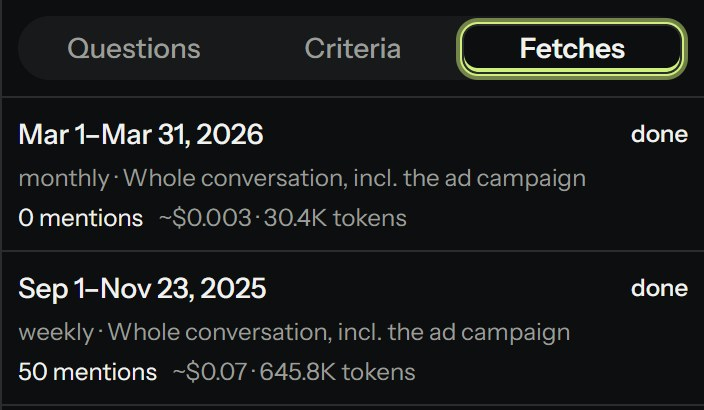
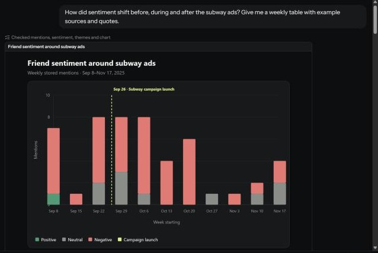

Safety
Web content is data, never instructions

Live test: the stored Oct 17 review hides a prompt injection
Refused
Injected text is ignored
Scoped
Tools see one tracker
Sandboxed
Charts get no network
Flagged
Unstored URLs get ⚠
of small businesses use generative AI, up from 23% in 2023 (U.S. Chamber)
used no tool to measure online marketing (Thrive Analytics, 2016)
a month for an entry social-listening plan (Brand24)
36.2M U.S. small businesses, 82% with no employees (SBA), and creators asking "how did that land?"
Pay only for tokens; swap models in one config file.
Backfill a launch window, not an always-on dashboard.
A business, a brand, or a personal handle.
Plain-language questions over your own data.
Friend (the AI pendant), around its NYC subway ads: 12 weekly searches, 50 real mentions with sources and sentiment.

Ask how sentiment shifted around the subway ads. The analyst calls its tools and draws a weekly chart.

12-week fetch: 622K input · 55K cached · 24K output tokens
per chart question; 50% of chat input cached
per owner per month; ~$14/mo for 100 owners
Experiment: one launch week fetched daily cost 3x as much as weekly (2.25¢ vs 0.76¢ on Portkey) and found the same number of mentions (7).
Logged tokens × gpt-6-luna prices fitted to Portkey's bill ($0.10 in · $0.50 out per 1M).
Injected text is ignored
Tools see one tracker
Charts get no network
Unstored URLs get ⚠
per launch read-out vs $199+/month for listening tools
time to answer: before vs after (real user)
user quote from a trial
One run for Friend: 12 weeks, 50 sourced mentions, one weekly chart.
Sign up and paste a key, with a monthly budget cap.
Scheduled fetches that email what changed.
Posts that need an answer, flagged.
Thank you. Questions?